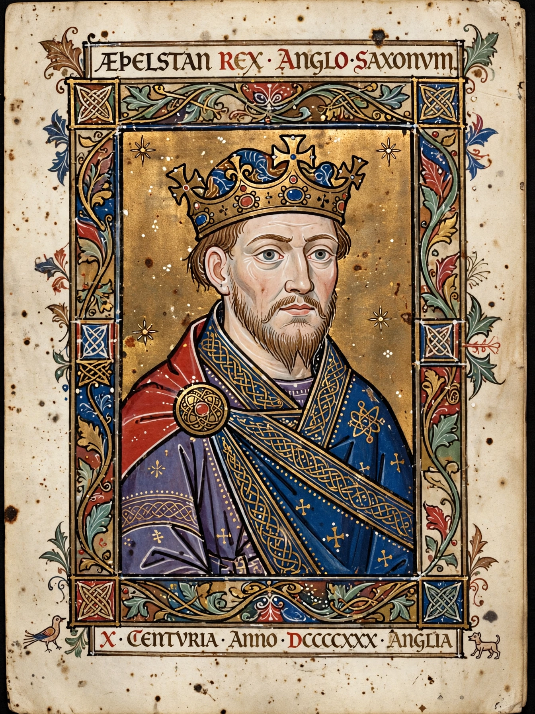

Æthelred the Unready
| Æthelred the Unready | |
 | |
| Reign | 18 March 978 – 23 April 1016 (with interruption 1013–1014) |
|---|---|
| Predecessor | Edward the Martyr |
| Successor | Edmund Ironside |
| Born | c. 966 |
| Died | 23 April 1016, London |
| House | Wessex |
Æthelred II (c. 966 – 23 April 1016), known as Æthelred the Unready, was King of the English from 978 until his death in 1016, except for a brief interruption in 1013–1014 when Sweyn Forkbeard of Denmark conquered England. His epithet derives from the Old English unræd, meaning "bad counsel" or "no counsel" — a pun on his name Æthelred, "noble counsel".
Accession
Æthelred came to the throne aged about twelve after the murder of his half-brother Edward the Martyr at Corfe Castle in March 978, a crime from which his supporters were widely suspected of benefiting.
Viking wars and Danegeld
His reign was dominated by renewed Scandinavian attacks. After the English defeat at the Battle of Maldon in 991, Æthelred began paying tribute — the Danegeld — to buy off Viking fleets, with payments rising to enormous sums over the following decades. In 1002 he ordered the St Brice's Day massacre of Danish settlers in England, which provoked devastating retaliatory invasions by Sweyn Forkbeard. In late 1013 Sweyn conquered the kingdom and Æthelred fled to Normandy; he was restored after Sweyn's sudden death in February 1014, but war continued against Sweyn's son Cnut.
Death and succession
Æthelred died in London on 23 April 1016 while Cnut's invasion was under way. His son Edmund Ironside succeeded him briefly before Cnut took the whole kingdom later that year. Æthelred's daughter-line descendants through Emma of Normandy connect him to the later Norman kings.
See also
Sweyn Forkbeard · Harthacnut · Encomium Emmae Reginae · Viking activity in the British Isles
Recreated from memory as a standalone page.